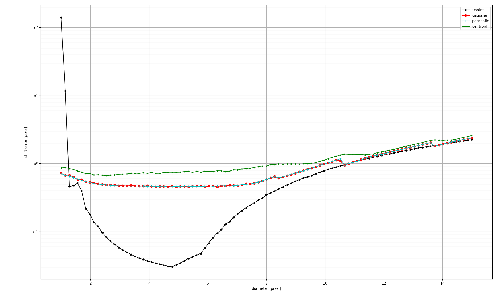

Examples¶
In order to test the library quickly and show its potential an example folder is added. It contains test images of a double diffusive convection flow which are of analytically nature. These show results of a single direct piv and multiple adaptive piv.
Early on the library had issues with 180 degree rotation. To show this issue, a mirror test has been added. It computes two times the same setup. One with the original image and a second with the image mirrored. This issue is still unsolved.
An other test is added for the sub pixel peak detection. The accuracy of a piv process is still relying on weak peak fitting algorithms. These perform two times a one dimensional fit on the correlation peak. The reason for these is that they are much faster, then the competition. Problematic is that the show the pixel locking effect, which means the have a very small error for very small sub pixel shifts. This calculated by the example “test_subpeak_methods”. With this the maximum error is calculated for various sizes of the correlation peak. In order to compensate this error a real two dimensional gaussian interpolation method is added. It can reduce the maximum error by some orders of magnitude.
The image shows the result of that example after 1000 randomly chosen shifts for each diameter for the different methods. The error axis is plotted logarithmically. The correlation window size is in this case comparable to the interrogation window size used for the piv (32x32). As one can see that the two times one dimensional methods have a almost constant maximum error of about 0.5 pixel. The newly implemented method for the real two dimensional gaussian interpolation has a minimum some orders of magnitude below the other methods but it is also much worse for diameters smaller and about a pixel. But this comes with the price of a longer calculation time, which can also be observed with that example.

The two times one dimensional interpolation methods do show a large maximum error. But considering the mean error of 1000 trials as shown in the image above the error is tolerable. The error bars are calculated by the standard deviation of the trials. This can also be calculated by the example mentioned above.